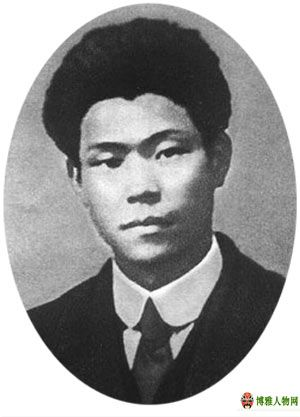
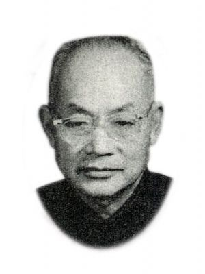

曾国藩（1811-1872） 初名子城，字伯函，号涤生，谥文正，湖南长沙府湘乡（今湖南省双峰县）人。中国清朝时期的军事家、理学家、政治家，书法家，「中兴名臣」之一，也是文学家，晚清散文「湘乡派」创立人。官至两江总督、直隶总督、武英殿大学士，封一等毅勇侯。湖南长沙府湘乡白杨坪人，现属湖南省双峰县荷叶镇天子坪。
蔡和森（1895—1931），字润寰，号泽膺，湖南省双峰县永丰镇人。中国共产党早期的重要领导人，杰出的共产主义战士，无产阶级革命家、理论家和宣传家。 蔡和森同志是中共第二、三、四、五、六届中央委员，第三、四届中央局委员，第五、六届中央政治局委员、常委，担任过中共中央代理秘书长、中共中央宣传部部长、中共两广省委书记。 1895年3月，蔡和森出生于上海，后随母亲回到家乡湖南双峰。1913年进入湖南省立第一师范读书，期间，同毛泽东等人一起组织进步团体新民学会，创办《湘江评论》，参加五四运动。1921年10月，蔡和森从法国归来，在中共三大、四大上当选为中央局委员，参与中央领导工作。并在中共五届一中全会上当选为中央政治局委员、常委，随后又兼任中共中央秘书长。1931年，蔡和森在组织广州地下工人运动时遭叛徒出卖被捕，牺牲在广州军政监狱，终年36岁。 2009年9月14日，蔡和森被评为100位为新中国成立作出突出贡献的英雄模范之一。
曾昭抡 中国科学院院士，高教部副部长，化学家。 湖南省湘乡县(今双峰县)人，1899年5月25日生于湘乡县荷叶乡万宜堂一个官宦世家。6岁读私塾。10岁入长沙雅礼中学。1915年考入清华留美预备学校(今清华大学前身)。1920年秋毕业后公费赴美留学，入麻省理工学院化学工程科攻读化学专业。1926年毕业，获博士学位。回国后，致力化工研究。先后执教南京中央大学和北京大学，并任化学系主任。1931年8月，在南京发起成立中国化学学会，创办《中国化学会会志》(后改名为《化学学报》)，任会长、总编。还任《科学》、《化学》、《化学工程》等杂志编委。所撰《有机化学百年进步概况》、《中国化学之研究》、《中国有机化学研究》、《二十年来中国化学进展》等文章，引起国内外科学界的重视。抗日战争爆发后，在西南联合大学任教，致力于教学和科研工作，后随时局变化，开始关心政治。1944年在昆明加入民主同盟，与进步人士李公朴、闻一多等一道争取和平、民主，反对-。还积极参加各种时事会、演讲会，发表团结、抗日言论，深受进步学生的支持与爱戴。1946年，为免遭国民党破孩，偕同夫人俞大姻再渡重洋，赴美麻省理工学院任教。曾任联合国原子能管理委员会中国代表、美国原子能研究室研究人员，对原子能科学进行考察和研究。1948年，当选为中央研究院数理组院士，赴欧洲讲学，翌年在香港报界工作。 新中国成立后，周恩来发出电报，邀请他回国参加政治协商会议，并派潘汉年前往迎接。回国后，先后任第一届全国人民代表大会代表、第一至四届全国政协委员、中国民主同盟中央常务委员、北京大学教务长兼化学系主任。1953年后，任高教部副部长兼中国科协副主席、中国科学院学部委员、化学研究所所长等职。经他审定的化学命题15000多个，为化学名词调整统一和规范化作出了重大贡献。1957年，他与几位教授提出《对于有关我国科学体制问题的几点意见》，因而被错划为右派。撤职后，到武汉大学任教授，仍致力于化学研究。1964年11月，根据他的建议，中央有关部门召开教育部直属高等院校元素有机化学科学研究会，促进了元素有机化学的教学和研究工作的发展。“文革”中，受到林彪、--集团的破孩。1967年12月，在武汉含冤逝世，终年68岁。1981年3月平反昭雪。 他不仅对化学史特别是近代化学史进行过深入研究，而且在有机化学理论与分子结构的研究方面有着特殊的贡献，是最早主张学校要搞科研的化学家之一，为新中国培养了大批人才。